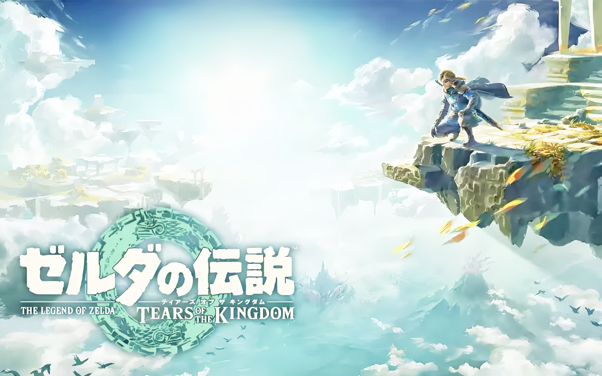
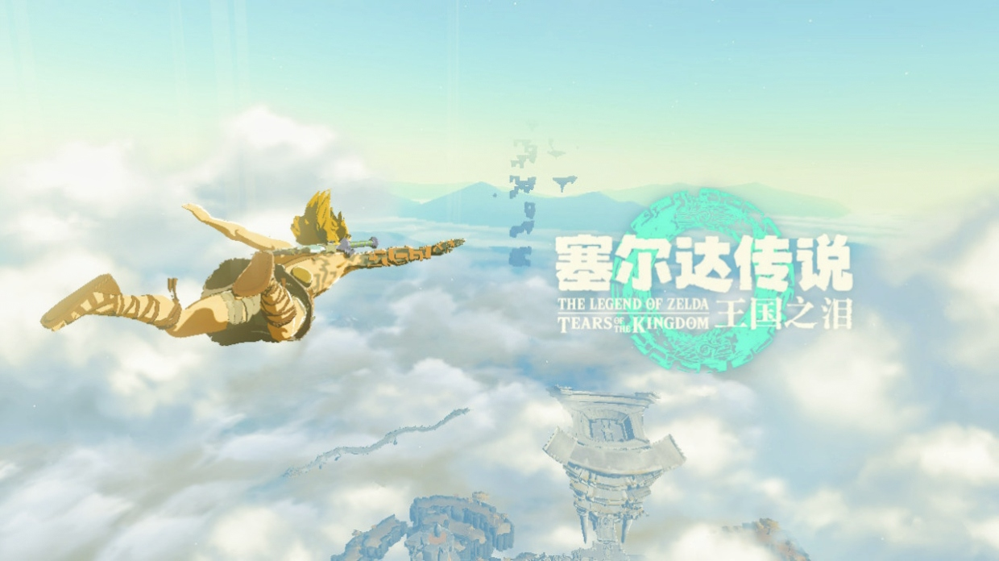
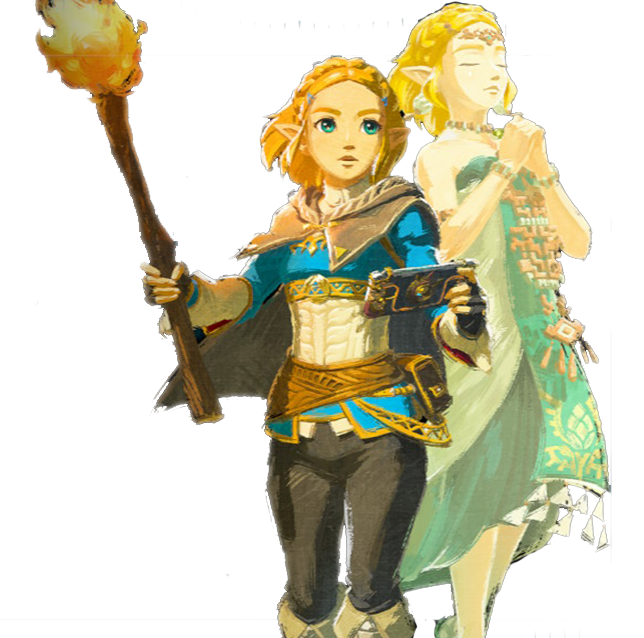
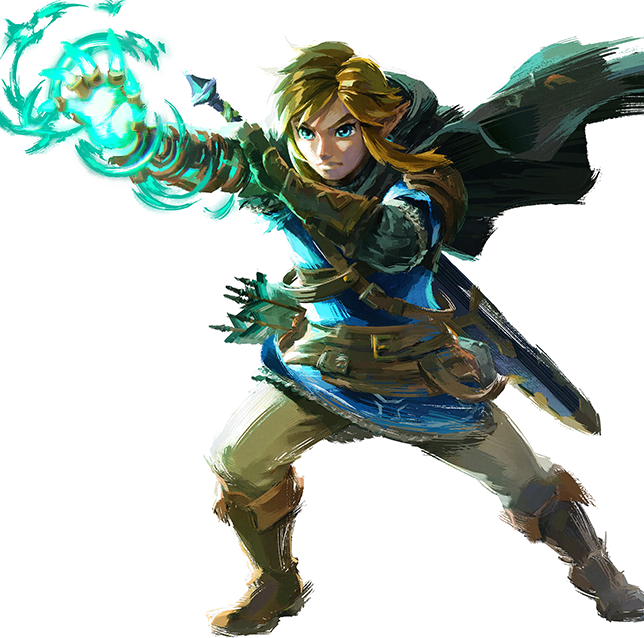
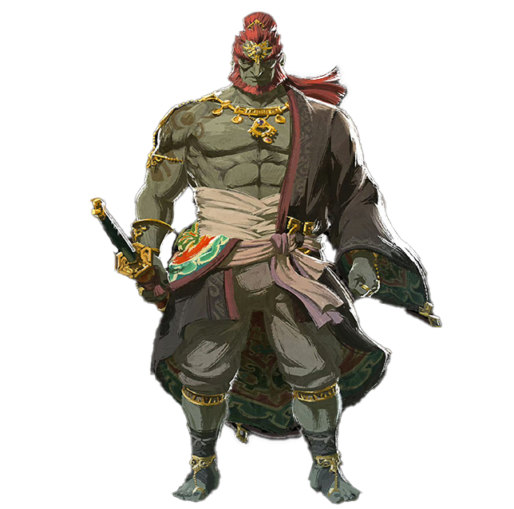
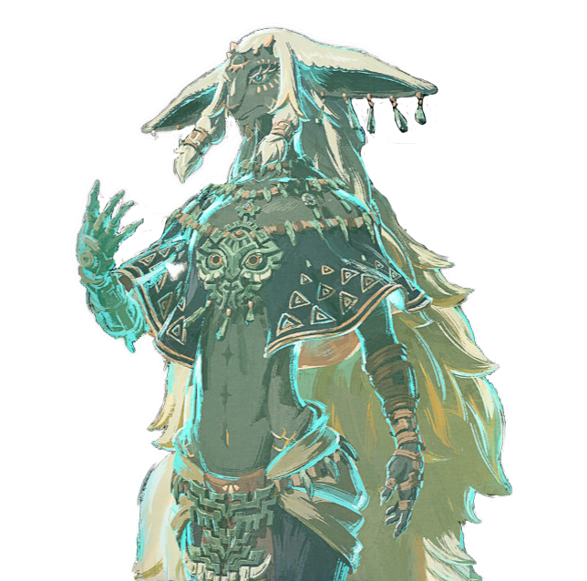

|  | ||||||
| 首页 | 游戏简介 | 人物介绍 | 玩法说明 | 我的探险 | 精美壁纸 | 返回主页 |
| 故事的开始…… |
|  |
诡异的城堡地下，金色短发的公主小心翼翼地举着火把一步一步地向着漆黑的 前方探索。她从没想过城堡的地下竟是这番神秘，在火把微弱光芒的照射下，她看 见了洞窟上从未见过的远古壁画。面对奇怪的壁画，阴森的地下，以及前方未知的 黑暗，塞尔达也开始有些心慌，随即下意识看向身旁，还是那道坚定的身影，她不 禁安心下来。然而她再回头看向前面的洞口，两道黑影一下从空中飞来，直冲向公 主陛下……
|
|
就在千钧一发之际，身后一道身影以迅雷不及掩耳之势闪到公主身前，寒光一闪，空中的两只蝙蝠 应声落下。“谢谢你，林克。”。林克沉默不语。身为公主唯一近卫，海拉鲁第一剑客的他一直都不太 爱说话。不过这并不影响他成为公主最信赖的人，也正应如此，在得知城堡下面有未知发现时，塞尔达 陛下第一时间就找到林克一同前往探索。而林克手中的大师之剑更为这次探索提供了绝对的保障。两 人继续前进，直到进入一个旷大的洞穴，洞穴的中央摆着一口硕大的黑色棺材，周围环绕着圈圈红黑色 的诡异气体，显得十分神秘，又让人不寒而栗。 |
 |
|  |
就在两人靠近之时，棺材一下被掀开，周围诡异的气体飞速环绕扩散， 一个骷髅突然水灵灵地从棺材里起身，林克连忙拔出大师之剑，将公主 护在身后，正待林克挥出剑刃之时，骷髅一下张开了嘴巴，无数的诡异 气体----瘴气从中涌出，顺着大师之剑向上缠住了林克的右臂，林克的生 命值和精力圈瞬间下降，与此同时，洞穴的地面开始摇晃，如同地震般 剧烈。“林克！”塞尔达一声惊呼，她脚下的地面坍塌了，来不及反应开 始下落。林克挣开瘴气的缠绕，纵身一跃，伸出手臂想抓住塞尔达的手， 可惜就差那么一点没有碰到，塞尔达随即继续下落消失在了黑暗之中， 下坠的林克抬头望去，骷髅头正一脸邪笑地看着他。一块落石砸来，一 阵眩晕传来，林克缓缓闭上了眼睛…… |
|
林克再次睁开眼睛，自己已经在了初始空岛上。被瘴气侵蚀的身体，腐败 的右臂被神秘的灵魂替换了一个充满魔力的全新右臂，腐朽的大师之剑，一 切仿佛变得困难重重。城堡漂到了上空，谜之遗迹群从空中落下，天气异变， 地底深穴，危险瘴气……面对一系列困难和挑战，林克知道，他将再次投身 到无尽的冒险之中。他要调查出这一切异变背后的阴谋并阻止掉，找回塞尔 达公主。这一次，他相信，他一定能握住塞尔达的手，冒险也拉开了序幕…… |
 |